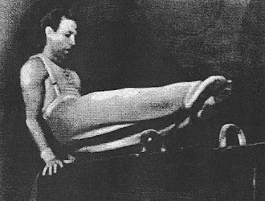

Vladimir Belyakov (USSR)
2-Time USSR AA Champion
1952 Olympic Team Gold Medalist

Medal Total
Olympic Games: 1 Gold
Vladimir was born in 1918 in
Moscow and trained at Dynamo. A Merited Master of Sport, and a
Merited
Coach of the RSFSR, Belyakov worked as the head coach at the School of Masters
of Sport in the 1960s and was a member of the Organizing Committee for the 1980
Moscow Olympics. He died in 1996.
Competition Results
1936
All-Union Youth Championships: 1st AA
Burevestnik Championships: 1st Team
Moscow City School Gymnastics Championships: 1st AA
1939
USSR Championships: 1st FX, 3rd PB
1940
Moscow Championships: 1st AA
USSR Championships: 1st FX, 1st PB
1943
USSR Championships: 2nd AA, 1st FX, 2nd R, 2nd PB, 3rd PH, 3rd V, 3rd
HB
1944
USSR Championships: 1st AA, 1st FX, 2nd V, 2nd PB, 3rd PH
1945
Dynamo Central Council Championships: 1st AA
Moscow City Championships: 1st AA
USSR Championships: 8th AA, 1st FX, 2nd HB, 3rd V
1946
Moscow Championships: 3rd AA, 1st AA, 1st V, 2nd FX, 2nd PB, 3rd PH
USSR Championships: 3rd AA
1947
Dynamo Sports Society Championships: 1st AA
Moscow Championships: 1st AA
USSR Championships: 1st AA, 1st FX, 1st PB, 2nd PH
USSR-FIN: 1st AA
1948
USSR Championships: 3rd AA, 2nd PH, 2nd V, 3rd FX, 3rd R
1949
Dynamo Sports Society Championships: 1st AA
Moscow Championships: 1st AA
USSR Championships: 3rd AA
1950
Moscow Championships: 2nd AA, 1st HB
USSR Championships: 3rd AA, 2nd FX
USSR-HUN Dual Meet: 1st Team, 2nd AA, 1st PH, 3rd FX, 3rd V, 3rd HB
1951
USSR Championships: 3rd HB
1952
Moscow Championships: 1st AA, 1st FX
Olympic Games: 1st Team, 6th AA
USSR Championships: 5th AA
1953
USSR Championships: 6th AA
1954
Moscow Championships: 5th AA
This page was created on November
05, 2005 and was last updated on April 20, 2014.
© Gymn Forum